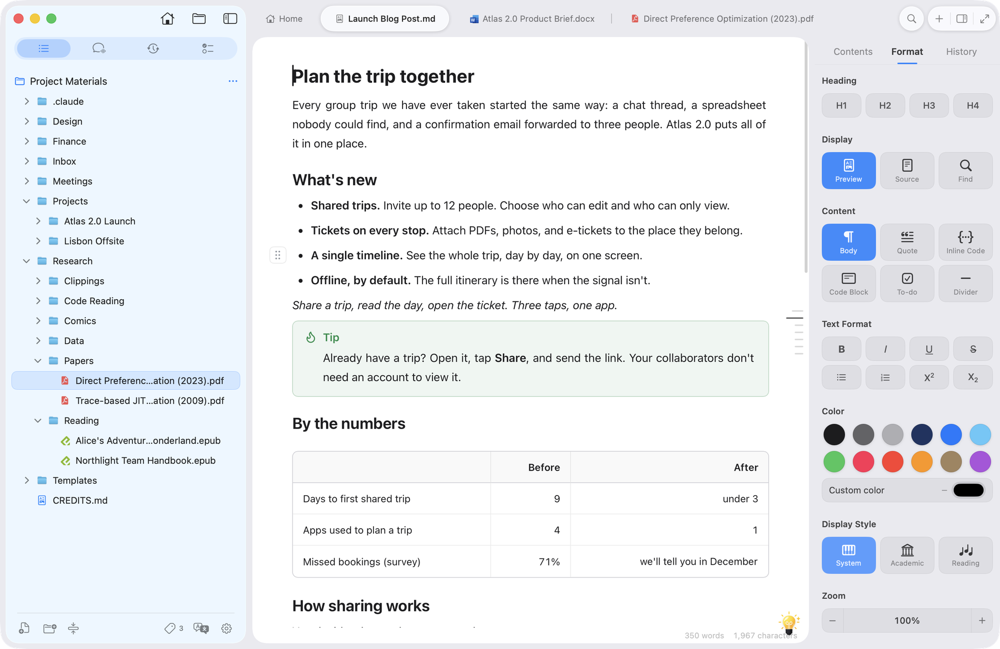
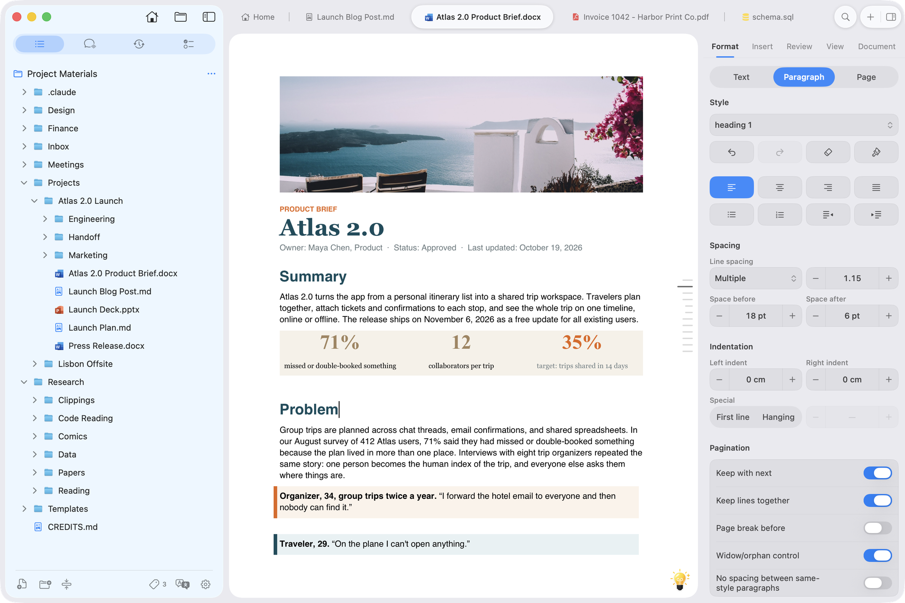
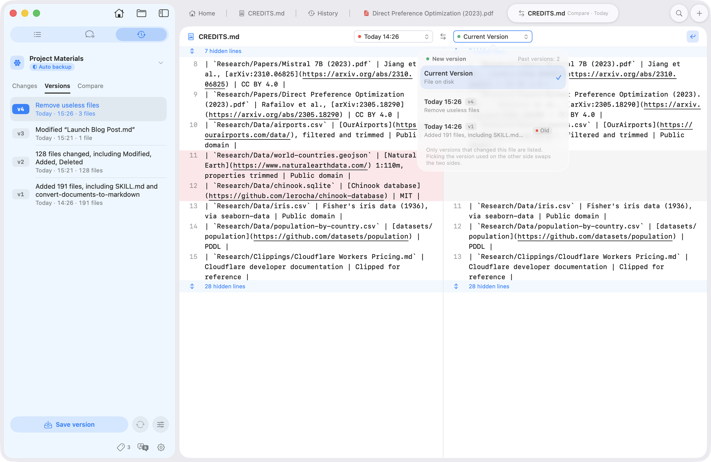
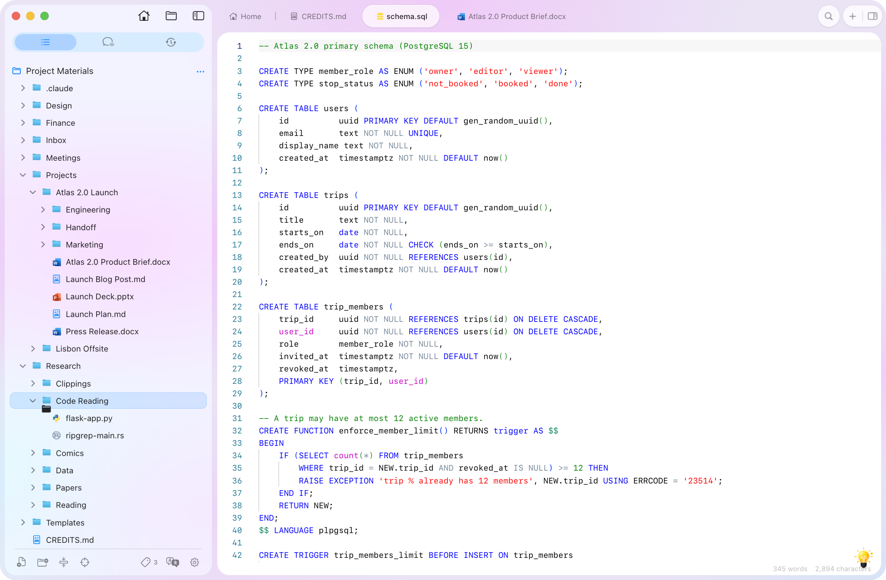
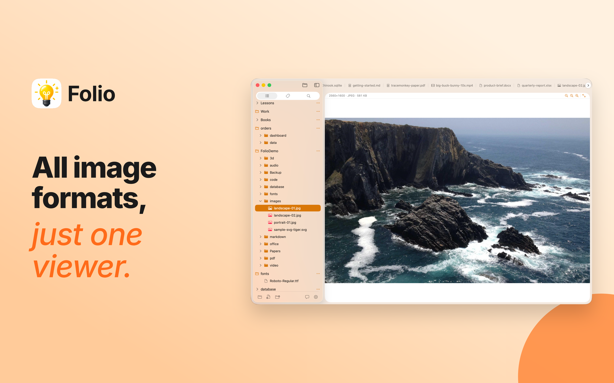
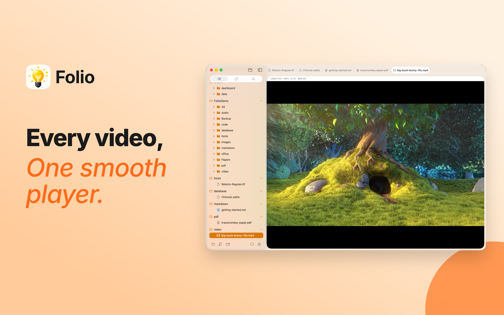
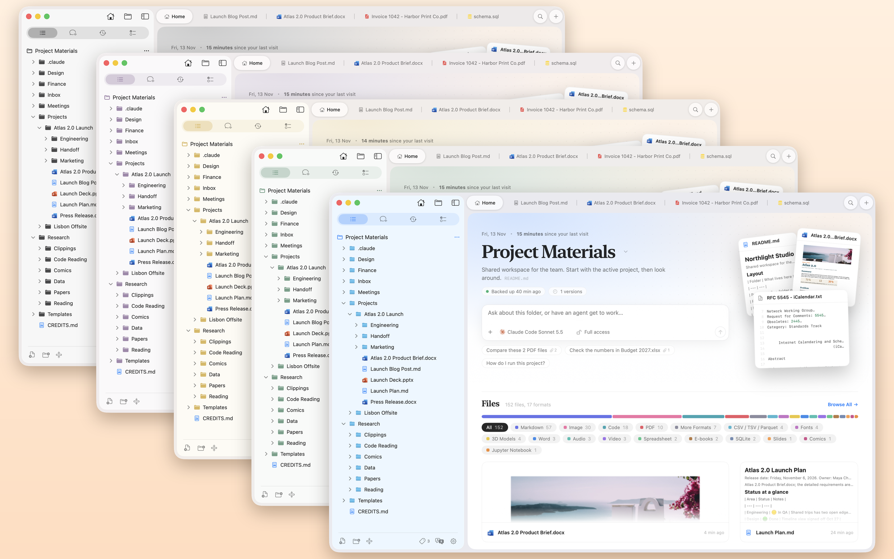

Agent 并行
多个项目忙不过来？Claude Code、ChatGPT、Gemini 并行启动！
Markdown 编辑
精美、好用的 Markdown 编辑器，不用再记语法。
Office 编辑
直接打开编辑微软 Office 系列文件。
版本历史
改错了，误删了文件，没关系，有后悔药。
多个项目忙不过来？Agent 并行启动！
Claude Code、ChatGPT、Gemini 并行启动，每个文件夹一组 Agent。它们写出的文件就在旁边，直接看、直接改，再配上真正的 Git 与本地模型。

每个文件夹，一组 Agent
Claude Code、Antigravity CLI 等命令行 Agent 作为标签页运行，会话按文件夹归档，随时接着聊。

在文档上直接问 AI
右下角唤出 Ask AI，当前文件自动带上。总结这一段、提炼结论，或者让它翻译成法语。
终端与 AI 标签页
在要修改的文件旁边，直接运行 Claude Code、Codex 等命令行工具。
完整 Git
打开的每个仓库都能看提交历史、Diff 与 Blame。
提问与总结
在侧栏里提问，任何文档都能一键总结。
本地模型
语义搜索、离线翻译与 OCR，在你的 Mac 上运行。
语言服务
通过 LSP 为 Go、Rust、Python、TS/JS、Java 提供代码智能。
任务与日历
任务放在工作旁边，与菜单栏日历联动。
PDF 进阶
PDF 转成 Markdown，或保留排版直接翻译。
iCloud 同步
支持 iCloud 同步，以及更多翻译引擎。
Markdown 像natural writing.
边写边见。标题、列表、表格、代码块立刻自动美化，没有分屏预览的割裂。内置离线翻译，写作的同时切换语言。
- 所写即所见，整洁清爽
- 数学公式、流程图、代码块自动美化
- 多语言翻译，离线就能用


Word 文档edit it right there.
不用等 Word 启动。双击打开，直接在页面上改——样式、对齐、行距、缩进和分页控制，都收在右侧面板里。
- 格式、插入、审阅、视图、文档，五个面板各管一件事
- 段落样式、行距、缩进、分页控制一应俱全
- Excel、PowerPoint、Pages、Numbers、Keynote 同样一键打开

历史版本every change, kept.
自动备份整个文件夹。每次改动都记成一个版本，随时并排对比，看清这个文件改过什么、删掉了什么。
- 自动备份，也可以随时手动保存版本
- 并排对比任意两个版本，增删一目了然
- 每个版本都写明改了哪些文件
Agent 写什么，都能直接打开。
PDF、电子书、代码、图片、视频……各种格式，一样在这个窗口里看完。
PDF 工具箱all on your Mac.
阅读、标注、整理页面，一个面板搞定。合并、拆分、裁剪、水印、页码、文字识别、文件对比、压缩与加密，都不用再另找工具。
- 页面缩略图一览，整理页面一步到位
- 合并、拆分、裁剪、对比、修复、压缩、加密
- 默认都在本机完成，只有标注「在线」的功能才会联网


电子书read like a real book.
EPUB 直接打开，和文档放在同一个文件夹里。滚动或翻页阅读，字号、栏宽、字体和背景都由你定，读起来就像一本真正的书。
- 滚动与分页两种阅读方式
- 字号、栏宽、字体、背景自由调节
- 目录一键跳章
优雅的代码阅读fully yours.
主流编程语言一应俱全。语法着色清爽、缩进对齐整齐——让代码读起来像读散文一样舒服。
- 主流编程语言全覆盖
- 舒服的字号、行距与配色，长时间阅读不累
- 文件夹并排浏览，需要时随时切换


所有图片格式just one viewer.
再大的图也是秒开。手机照片、相机原图、网络图片、动图、矢量图——一键打开，可缩放、查看拍摄信息、在文件夹里前后翻页。
- 从手机随手拍到相机原片，常见格式都能看
- 超大图秒开，无需等待
- 方向键翻页，空格键快速预览
每段视频one smooth player.
主流视频格式直接播放，不用等转码。键盘快捷键、字幕、画中画一应俱全，省电不发烫。
- 省电流畅，不烫手不卡顿
- 字幕文件一拖即用
- 音频文件也能看到声音波形

14 种格式，一个窗口看完

你的 Folioyour color, 15 themes.
细腻的界面质感，搭配 15 套精心调校的主题。从奶油米到午夜黑、从苔藓绿到墨水蓝——每个文件都有最合适的阅读色温。
- 15 套精心调校的主题
- 深浅自动跟随系统
- 字体、行高、阅读宽度都能自己调
不只是看，更是用得顺手。
每一个细节，都为了让你在文件之间穿梭得更安静、更专注。
访达式标签
每个工作空间记得你的滚动位置和上次打开的文件。
秒找任何东西
按内容搜索，不止文件名。笔记里的一句话也能瞬间命中。
多文件夹并列
几个项目同时挂着，左边一棵清晰的文件树。
细腻玻璃质感
与系统美学一脉相承的优雅界面。
3D 模型与字体预览
三维模型可以转着看，字体可以一目了然地试。
表格与数据
电子表格与数据表直接查看、排序、筛选。
代码语法着色
几乎你能想到的编程语言都已经准备好。
Markdown 翻译
一键把笔记切换成另一种语言，离线快速。
无干扰阅读
透明标题栏、阅读宽度可调，让文字成为主角。
仍有疑问？
Folio 是一款 Mac 文件浏览器。一个应用里就能打开文档、表格、演示稿、PDF、笔记、代码、图片、音乐和视频——把你日常要切换的十几个 app 收纳进一个安静、专注的窗口。
系统自带的预览只能「看一眼就关」。Folio 是为长时间停留打造的工作空间：多标签、跨文件搜索、双向编辑笔记、15 套阅读主题——把「打开一下就走」变成「打开就能开始工作」。
可以。笔记和代码完全可编辑。Office 文档与 PDF 目前是高保真预览，下一版本会开放标注与表单填写。
Folio 支持 macOS 15 及以上版本。Folio Pro 内置本地模型，需要 Apple 芯片（M 系列）的 Mac。
Folio 在你打开文件夹时就悄悄准备好，之后只在文件变化时跟进。一万个文件的大文件夹，输入即可命中——你不会感觉到它在工作。
所有处理都在你的电脑上完成。Folio 不会把你的文件内容上传到任何地方——这是默认行为，没有「关闭云同步」的开关。
Folio 与 Folio Pro 目前都完全免费。将来如果调整定价，会提前公布，早期用户会获得忠诚度优惠。
Every file your AI writes.Read it and edit it right where it is.
Claude Code、ChatGPT、Gemini 并行启动，文件就在旁边。
Folio Pro 目前免费 · Windows 版即将到来